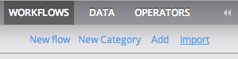
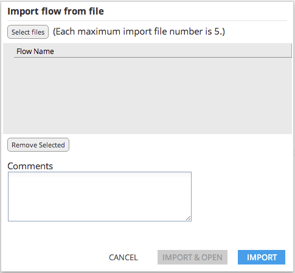

To import a flow from the local filesystem, click 'Import' in the Workflow Explorer.

Use 'Select Files' to choose locally stored workflow files (.afm). Then click 'Import' to import the flows into your Personal Workflow Explorer.
